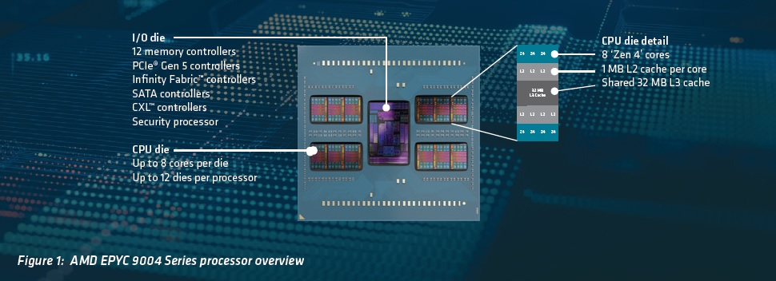

Date of Issued :2022/12/13
Subject : 第四世代
Message Contents :
前回は、AMD EPYC™ プロセッサー紹介をさせていただきました。今回は、このプロセッサについて、技術詳細を複数回に分け、ご紹介をさせていただければと希望いたします。技術詳説の第一回目タイトルは、「ハイブリッドマルチダイアーキテクチャー」です。
AMD EPYC™ プロセッサーの最も重要なイノベーションは、ハイブリッドマルチダイアーキテクチャです。CPU コアと I/O機能を、2つのダイへ分離し、必要に適したタイムラインで開発製品化出来るようにいたしました。この第4世代プロセッサでは、「Zen 4」CPUダイは5nmテクノロジで製造され、I/Oダイは6nm テクノロジで製造されています。AMD EPYC™ プロセッサーは、最大12個のCPUで構成されています。
これらのテクノロジーにより、以下のメリットをもたらします。
ソフトウエアライセンスの最大活用：
ライセンスを最大限に活用したいため、コア数が少なく、クロック速度が高いプロセッサセットを提供しています。 たとえば、8 つのコアを持つ単一の CPUダイを使用する代わりに、8つのコアをそれぞれ1つのコアを持つ8つのCPUダイに分散させることができます。 これにより、プロセッサ全体へ熱負荷が分散され、クロック周波数を上げることができます。 この8コアの例では、各コアが独自のメモリチャネルへ接続されます。 これにより、メモリアクセスがメモリチャネル全体に分散され、メモリレイテンシの短縮に役立ちます.
エンジニアリングパフォーマンスの向上:
AMD 3D V-Cache™テクノロジーです。 文字通りこのスタックは各CPUダイ上へキャッシュメモリを実装。 これは、現在の2D技術の200倍以上の相互接続密度を可能にするDirect Copper-to-Copper Hybrid Bondingプロセスを使用し、Solder Bumpsを使用する相互接続技術の15 倍以上の密度を可能として、この革新により、3D V-キャッシュを備えた第 3 世代プロセッサで768MBのL3キャッシュが提供されます。
クラウドコンピューティング環境の向上:
8コアを超えるCPUダイは、クラウドコンピューティング環境の全体的な密度を高める可能性を秘めており、サーバーごとにより多くの仮想マシンをホストするのに役立ちます
機械学習ワークロードの高速化:
最新のコア設計には、AVX-512 命令 (256ビットデータパス) のサポートが含まれており、BFLOAT16 や Vectorized Neural Network Instruction (VNNI) などのAI および ML ワークロードの高速化に役立ちます。
製品製造の簡略化:
マルチダイアーキテクチャは、製造プロセスの無駄を削減するのに役立ちます。 シリコンウエハー上に (比較的) 小さい CPU ダイを多数配置すると、避けられない製造上の欠陥は、テスト不良とし、プロセッサ製造へは利用しない少数の不良ダイとして処分します。 これらを比較すると、ウェーハに含まれるプロセッサの数が少なく、より大型のモノリシック プロセッサの場合、1 つの欠陥によってプロセッサ全体が不合格になり、ウェーハごとに製造されるプロセッサの平均数という点で全体の歩留まりが低下する可能性があります。
